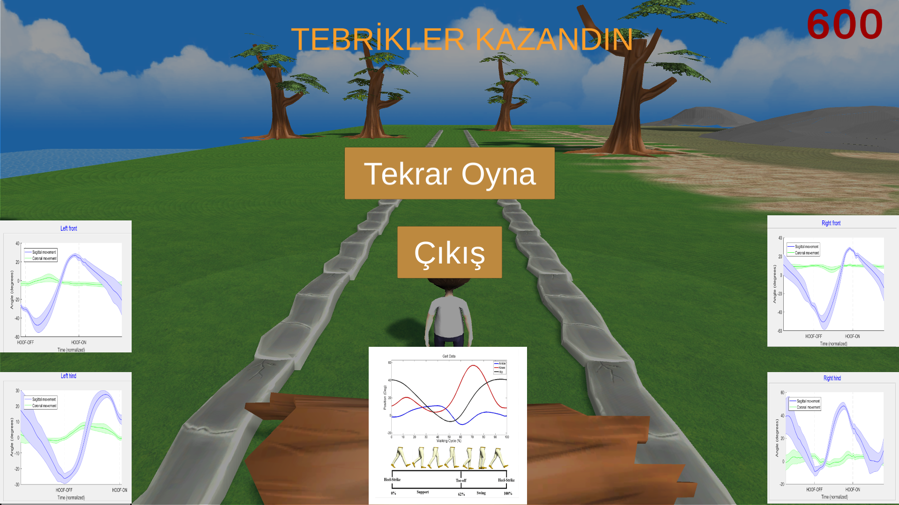

I have successfully completed an analysis and motivation-enhancing game project to be used in the health sector with my company, SAGE TECH, which was established with the support of Tübitak 1512 (BIGG).
I've worked on design, software and operation of the simulation game that works synchronously with hardware modules in C, C #, Matlab software languages. In this process, I gained experience on Arduino, .Net, Unity, UnrealEngine platforms. I also took part in the design and operation of hardware modules and made the data transmitted from sensors available on platforms such as Unity and UnrealEngine in real-time.